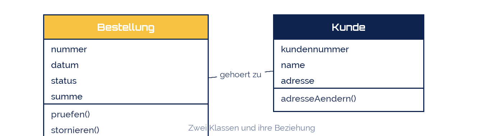

tjuusitalo
tjuusitalo
Good morning!
Nur das Schöne wird die Welt retten!
Fjodor Dostojewski
Nicht verzagen, Doc Alvers fragen!
Informatik — Grundkurs 12
Die objektorientierte Sicht
Klassen, Objekte, Attribute, Methoden — und wann man sie der Prozesskette vorzieht
Nicht verzagen, Doc Alvers fragen!
Kapitel 01
Ein anderer Blick
Nicht der Ablauf, sondern die Dinge
Nicht verzagen, Doc Alvers fragen!
Zwei Sichten auf dasselbe Unternehmen
Die Prozesssicht fragt: In welcher Reihenfolge passiert was?
Die Objektsicht fragt: Welche Dinge gibt es, und was können sie?
Beide beschreiben dieselbe Wirklichkeit — mit verschiedenem Zweck
Die Prozesskette endet an der Systemgrenze. Das Objektmodell geht in die Software hinein
Deshalb ist das Objektmodell der übliche Schritt vor der Programmierung
Nicht verzagen, Doc Alvers fragen!
Die vier Begriffe
| Begriff | ist | Beispiel |
|---|---|---|
| Klasse | der Bauplan für gleichartige Dinge | Bestellung |
| Objekt | ein einzelnes Ding nach diesem Bauplan | Bestellung Nr. 4711 |
| Attribut | ein Merkmal der Klasse | datum, status, summe |
| Methode | eine Fähigkeit der Klasse | pruefen(), stornieren() |
Der Unterschied zum Datenmodell: die Methoden — Daten und Verhalten gehören zusammen
Ein Objekt kennt seine Daten und weiß, was man mit ihm tun darf
Nicht verzagen, Doc Alvers fragen!
Ein kleines Klassendiagramm
Drei Fächer je Klasse: Name, Attribute, Methoden
Die Linie ist eine Assoziation — eine Beziehung zwischen den Klassen

Nicht verzagen, Doc Alvers fragen!
Kapitel 02
Vom Prozess zum Objektmodell
Wie man es herleitet
Nicht verzagen, Doc Alvers fragen!
Die Übersetzungsregeln
| Im Prozessmodell | wird im Objektmodell zu |
|---|---|
| Substantive im Prozesstext | Kandidaten für Klassen |
| Angaben, die erfasst werden | Attribute |
| Funktionen der eEPK | Methoden — an der Klasse, die es betrifft |
| Organisationseinheiten | eigene Klassen oder Rollen |
| Informationsobjekte | Klassen oder Attribute, je nach Bedeutung |
Die Substantiv-Methode ist ein Startpunkt, kein Automatismus: nicht jedes Substantiv wird eine Klasse
Prüffrage: Hat das Ding eigene Merkmale und einen eigenen Lebenslauf? Dann Klasse
Nicht verzagen, Doc Alvers fragen!
An unserem Bestellprozess durchgespielt
Substantive: Bestellung, Kunde, Ware, Rechnung, Lager, Vertrieb
Klassen: Bestellung, Kunde, Ware, Rechnung — alle haben eigene Merkmale
Keine Klasse: „Prüfung“ — das ist eine Methode von Bestellung
Attribute von Bestellung: nummer, datum, status, summe
Methoden: pruefen(), stornieren() — aus den Funktionen der eEPK
Nicht verzagen, Doc Alvers fragen!
Kapitel 03
Wann was?
Sich begründet positionieren
Nicht verzagen, Doc Alvers fragen!
Prozesskette oder Objektmodell?
| Frage im Vordergrund | besser geeignet |
|---|---|
| In welcher Reihenfolge läuft es ab? | Prozesskette (eEPK, BPMN) |
| Wer arbeitet mit wem zusammen? | BPMN mit Pools und Lanes |
| Welche Daten und Fähigkeiten gibt es? | Klassendiagramm |
| Was soll die Software können? | Klassendiagramm |
| Wo sind Wartezeiten und Doppelarbeit? | Prozesskette |
In der Praxis werden beide gebraucht — nacheinander, nicht statt einander
Erst der Prozess (was passiert), dann die Objekte (womit passiert es)
Nicht verzagen, Doc Alvers fragen!
Die Prozesskette beschreibt den Ablauf, das Klassendiagramm die Dinge. Wer Software bauen will, braucht am Ende beides.
Merksatz
Nicht verzagen, Doc Alvers fragen!
Fun Facts: Objektorientierung
Die Idee stammt aus Simula 67 — entwickelt in Oslo für Simulationen
UML entstand 1997 als Vereinigung dreier konkurrierender Notationen
Die drei Urheber Booch, Rumbaugh und Jacobson heißen bis heute die drei Amigos
UML kennt 14 Diagrammarten — das Klassendiagramm ist die mit Abstand häufigste
Alan Kay, Erfinder von Smalltalk: „Objektorientierung heißt für mich Nachrichten, nicht Klassen“
Nicht verzagen, Doc Alvers fragen!
Eure Aufgabe: dasselbe als Objektmodell
Nehmt euren Prozess und markiert alle Substantive im Text
Prüft je Substantiv: eigene Merkmale und eigener Lebenslauf? Dann Klasse
Zeichnet drei bis fünf Klassen mit Attributen und Methoden
Verbindet sie mit Assoziationen und beschriftet die Linien
Schreibt drei Sätze: Welche Frage beantwortet euer Objektmodell besser als die eEPK?
Nicht verzagen, Doc Alvers fragen!